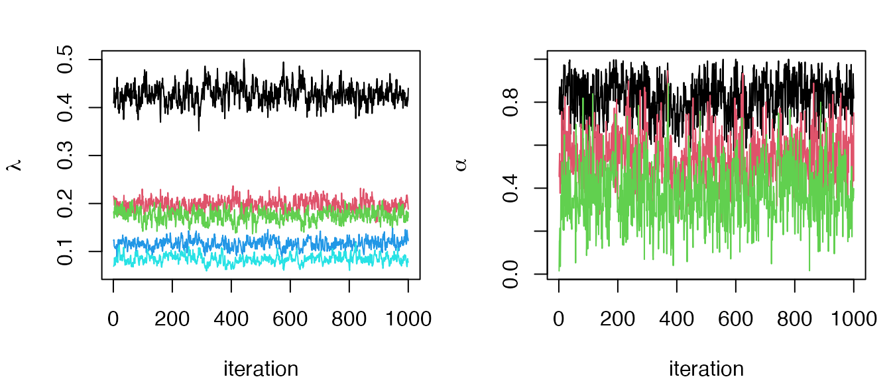

The Benter model
The Benter model (1994) is a generalization of the Plackett-Luce model for rankings. A ranking is built sequentially: at stage the next item is drawn from those still available with probability proportional to , where is an item’s worth and is a stage-specific dampening (noise) exponent. Setting all recovers Plackett-Luce; smaller flattens the choice probabilities, encoding the idea that rankers discriminate less sharply at later stages.
For identifiability we fix and report the worths on the sum-to-one scale.
Fit the model
gibbsBenter() is the single entry point. Supply the data
pi, the number of items J, the
Gamma(a, b) prior on the worths, and the
Beta(c, d) prior on the dampening
exponents.
fit <- gibbsBenter(pi, J = 5, a = 1, b = 1, c = 1, d = 1,
iters = 2000, burnin = 0.5)
rbind(truth = lambda, posterior_mean = colMeans(fit$lambda))
#> [,1] [,2] [,3] [,4] [,5]
#> truth 0.4000000 0.2400000 0.1600000 0.1200000 0.08000000
#> posterior_mean 0.4278881 0.1969852 0.1743369 0.1163316 0.08445811
rbind(truth = alpha, posterior_mean = colMeans(fit$alpha))
#> [,1] [,2] [,3] [,4]
#> truth 1 0.8000000 0.5000000 0.3000000
#> posterior_mean 1 0.8265617 0.5469033 0.3759476The returned object stores the posterior draws
(fit$lambda, fit$alpha) plus sampler
diagnostics in fit$parameters.
op <- par(mfrow = c(1, 2), mar = c(4, 4, 2, 1))
matplot(fit$lambda, type = "l", lty = 1, xlab = "iteration", ylab = expression(lambda))
matplot(fit$alpha[, -1], type = "l", lty = 1, xlab = "iteration", ylab = expression(alpha))
par(op)Partial rankings
Partial
(top-)
rankings are handled by the same function: leave the unranked positions
as NA (or pass a matrix with fewer than J
columns).
pi_partial <- pi
pi_partial[, 4:5] <- NA # keep only the top 3 of each ranking
fit_p <- gibbsBenter(pi_partial, J = 5, a = 1, b = 1, c = 1, d = 1,
iters = 1000, burnin = 0.5)
# only dampening parameters up to the deepest observed rank are estimated
colMeans(fit_p$alpha)
#> [1] 1.0000000 0.8310340 0.5501744 NA
fit_p$parameters$R_obs
#> [1] 3Here only the top 3 items are observed, so alpha_4 is
not identified and is returned as NA; the item worths for
all five items are still estimated.
A note on interval calibration
Credible intervals from this sampler are Bayesian, and their
frequentist coverage is only guaranteed asymptotically. In finite
samples with many items, short rankings, or widely-separated worths,
coverage can fall below nominal because the induced Dirichlet prior on
the normalized worths is informative (its strength grows with
J) and because extreme worths sit near the boundary of the
simplex. Reducing a toward or below 1 lessens the prior’s
influence on the normalized weights; checking coverage on a log-worth
scale is often better calibrated near the boundary.